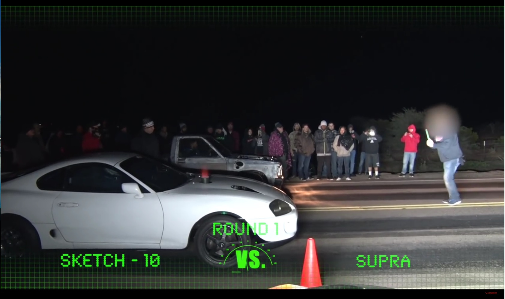
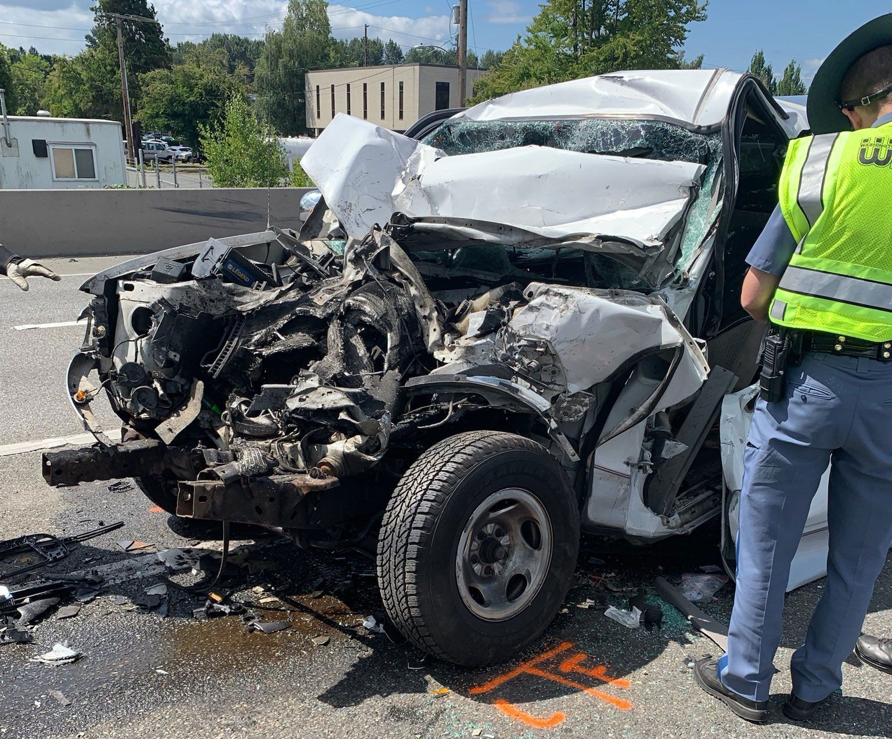

Major Criminal Violations
These violations share a common thread: they’re major criminal traffic offenses with escalating consequences based on harm caused. From racing to hit-and-runs, Arizona’s roads demand caution.
Under ARS § 28-708, racing on highways involves "driving a vehicle in a race, speed competition, contest, or exhibition of speed" on a public road. This includes drag racing, speed challenges, or even informal bets between drivers to outpace each other.
Classified as a Class 1 misdemeanor:
Arizona’s wide-open highways—like I-10 or SR 87—make racing tempting, especially for younger drivers or car enthusiasts. A single conviction can tank your insurance rates and leave a criminal record, while repeat offenders risk felony charges.

ARS § 28-661 (injury/death) and § 28-662 (property damage only) cover "hit-and-run" offenses. Drivers must stop at the scene of any crash they’re involved in, provide aid if needed, and exchange information. Fleeing is illegal, even if you’re not at fault.
Crash Involving Injury or Death (ARS § 28-661):
Property Damage Only (ARS § 28-662):
Hit-and-run cases spike in urban areas like Phoenix, where drivers panic after minor fender-benders or on rural roads after severe collisions. A felony conviction here is life-altering, affecting employment and civil rights (e.g., voting).

Under ARS § 28-672, failing to stop at a traffic signal, stop sign, or yield the right-of-way becomes a criminal offense if it directly causes a crash resulting in death. This applies to red lights, stop signs, or yielding to pedestrians/vehicles.
Class 1 misdemeanor
If prosecuted under felony statutes (e.g., manslaughter, ARS § 13-1103), penalties escalate:
This violation often ties to intersection collisions—common in Tucson or Mesa—where running a red light kills a pedestrian or another driver. Courts weigh causation heavily; if your failure to stop directly led to the death, felony charges are likely. Safety advocates push for stricter enforcement, citing Arizona’s high pedestrian fatality rates.
Injuries from these violations often involve cyclists or pedestrians in urban zones. It’s less severe than causing death but still leaves a criminal record, impacting insurance and employment. DPS occasionally highlights enforcement campaigns targeting stop-sign runners in residential areas.
Class 2 misdemeanor:
ARS § 28-3473 prohibits driving with a license that’s suspended (temporary) or revoked (long-term/permanent). This often follows prior offenses like DUI, reckless driving, or point accumulation.
Class 1 misdemeanor
This is a common trap for Arizona drivers—many don’t realize their license is suspended (e.g., unpaid fines) until pulled over. Rural drivers, reliant on cars for work, are hit hardest by impoundments or jail time.
These violations share a common thread: they’re major criminal traffic offenses with escalating consequences based on harm caused. Here’s how they affect drivers:
The state’s mix of sprawling highways and dense cities amplifies these risks. Racing thrives on I-17’s open stretches, hit-and-runs spike in Phoenix’s chaos, and stop-sign violations plague suburban intersections. DPS and local police use radar, red-light cameras, and citizen reports (often vented on X) to enforce these laws aggressively.
Legislative efforts—like 2024’s push for tougher hit-and-run laws—signal growing concern. Meanwhile, Arizona’s 2023 traffic fatality stats (1,307 deaths, per ADOT) underline why these violations are targeted: speed, recklessness, and fleeing cost lives.
For Arizona drivers, these offenses—racing, hit-and-run, failure to stop causing death/injury, and driving on a suspended license—are a legal minefield. Penalties range from months in jail to decades in prison, depending on outcomes. Prevention’s key: obey signals, stay off roads if unlicensed, and resist the urge to race. If caught, legal counsel can downgrade charges (e.g., felony to misdemeanor), but the stakes are high. Drive cautiously—Arizona’s roads don’t forgive easily!
1,307 traffic deaths (ADOT).
8 points added for racing.
5+ years for hit-and-run with death.
Click an option to test your understanding!
What is the maximum jail time for racing on highways (Class 1 misdemeanor)?
What is the felony class for leaving the scene with a serious injury?
How many points are added for failure to stop causing death?